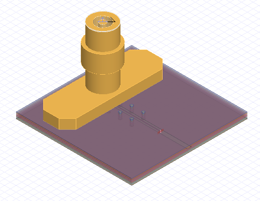

EDB: geometry creation#
This example shows how to
Create a parameterized PCB with an SMA connector footprint for a single-ended SMA connector launch footprint..
Place 3D component on PCB.
Create HFSS setup and frequency sweep with a mesh operation.
Create return loss plot
See the finished project#

Create a parameterized PCB#
Import dependencies.
[1]:
import os
import tempfile
[2]:
import ansys.aedt.core
import numpy as np
[3]:
import pyedb
from pyedb.misc.downloads import download_file
Create the EDB.
[4]:
temp_dir = tempfile.TemporaryDirectory(suffix=".ansys")
working_folder = temp_dir.name
# Select EDB version (change it manually if needed, e.g. "2024.2")
edb_version = "2024.2"
print(f"EDB version: {edb_version}")
aedb_path = os.path.join(working_folder, "pcb.aedb")
print("AEDB file is located in {}".format(aedb_path))
edb = pyedb.Edb(edbpath=aedb_path, edbversion=edb_version)
EDB version: 2024.2
AEDB file is located in C:\Users\ansys\AppData\Local\Temp\tmppnzdhv2l.ansys\pcb.aedb
PyAEDT INFO: Logger is initialized in EDB.
PyAEDT INFO: legacy v0.37.0
PyAEDT INFO: Python version 3.10.11 (tags/v3.10.11:7d4cc5a, Apr 5 2023, 00:38:17) [MSC v.1929 64 bit (AMD64)]
PyAEDT INFO: EDB C:\Users\ansys\AppData\Local\Temp\tmppnzdhv2l.ansys\pcb.aedb created correctly.
PyAEDT INFO: EDB initialized.
Create Stackup#
While this code explicitly defines the stackup, you can import it from a from a CSV or XML file using the Edb.stackup.load() method.
[5]:
edb.add_design_variable("$DIEL_T", "0.15mm")
[5]:
(True, <Ansys.Ansoft.Edb.Utility.VariableServer object at 0x000001DC1C758C80>)
[6]:
layers = {
"materials": {"ANSYS_FR4": {"permittivity": 3.5, "dielectric_loss_tangent": 0.005}},
"layers": {
"TOP": {"type": "signal", "thickness": "0.05"},
"D1": {"type": "dielectric", "thickness": "$DIEL_T", "material": "ANSYS_FR4"},
"L2": {"type": "signal", "thickness": "0.05"},
"D2": {"type": "dielectric", "thickness": "$DIEL_T", "material": "ANSYS_FR4"},
"L3": {"type": "signal", "thickness": "0.05"},
"D3": {"type": "dielectric", "thickness": "$DIEL_T", "material": "ANSYS_FR4"},
"L4": {"type": "signal", "thickness": "0.05"},
"D4": {"type": "dielectric", "thickness": "$DIEL_T", "material": "ANSYS_FR4"},
"L5": {"type": "signal", "thickness": "0.05"},
"D5": {"type": "dielectric", "thickness": "$DIEL_T", "material": "ANSYS_FR4"},
"BOT": {"type": "signal", "thickness": "0.035"},
},
}
[7]:
edb.stackup.load(layers)
[7]:
True
Create ground conductors.
[8]:
edb.add_design_variable("PCB_W", "20mm")
edb.add_design_variable("PCB_L", "20mm")
gnd_dict = {}
for layer_name in edb.stackup.signal_layers.keys():
gnd_dict[layer_name] = edb.modeler.create_rectangle(layer_name, "GND", [0, "PCB_W/-2"], ["PCB_L", "PCB_W/2"])
Create signal net#
Create signal net on layer 3, and add clearance to the ground plane.
[9]:
edb.add_design_variable("SIG_L", "10mm")
edb.add_design_variable("SIG_W", "0.1mm")
edb.add_design_variable("SIG_C", "0.3mm")
signal_path = (["5mm", 0], ["SIG_L+5mm", 0])
signal_trace = edb.modeler.create_trace(signal_path, "L3", "SIG_W", "SIG", "Flat", "Flat")
signal_path = (["5mm", 0], ["PCB_L", 0])
clr = edb.modeler.create_trace(signal_path, "L3", "SIG_C*2+SIG_W", "SIG", "Flat", "Flat")
gnd_dict["L3"].add_void(clr)
[9]:
True
Place signal vias#
Create the via padstack definition and place the signal vias.
[10]:
edb.add_design_variable("SG_VIA_D", "1mm")
edb.add_design_variable("$VIA_AP_D", "1.2mm")
edb.padstacks.create("ANSYS_VIA", "0.3mm", "0.5mm", "$VIA_AP_D")
edb.padstacks.place(["5mm", 0], "ANSYS_VIA", "SIG")
PyAEDT INFO: Padstack ANSYS_VIA create correctly
[10]:
<pyedb.dotnet.edb_core.edb_data.padstacks_data.EDBPadstackInstance at 0x1dc1b603670>
Create ground vias around the SMA connector launch footprint. The vias are placed around the circumference of the launch from 35 degrees to 325 degrees.
[11]:
for i in np.arange(30, 326, 35):
px = np.cos(i / 180 * np.pi)
py = np.sin(i / 180 * np.pi)
edb.padstacks.place(["{}*{}+5mm".format("SG_VIA_D", px), "{}*{}".format("SG_VIA_D", py)], "ANSYS_VIA", "GND")
Create ground vias along the signal trace.
[12]:
for i in np.arange(2e-3, edb.variables["SIG_L"].value - 2e-3, 2e-3):
edb.padstacks.place(["{}+5mm".format(i), "1mm"], "ANSYS_VIA", "GND")
edb.padstacks.place(["{}+5mm".format(i), "-1mm"], "ANSYS_VIA", "GND")
Create a wave port at the end of the signal trace.
[13]:
signal_trace.create_edge_port("port_1", "End", "Wave", horizontal_extent_factor=10)
[13]:
('port_1', <pyedb.dotnet.edb_core.edb_data.ports.WavePort at 0x1dc7f0e34c0>)
Set up HFSS simulation#
The max_num_passes argument sets an upper limit on the number of adaptive passes for mesh refinement.
For broadband applications when the simulation results may be used to generate a SPICE model, the outer domain boundary can be located roughly
from the internal structures in the model.
[14]:
extend_domain = 3e11 / 5e9 / 8.0 # Quarter wavelength at 4 GHz.
edb.design_options.antipads_always_on = True
edb.hfss.hfss_extent_info.air_box_horizontal_extent = extend_domain
edb.hfss.hfss_extent_info.air_box_positive_vertical_extent = extend_domain
edb.hfss.hfss_extent_info.air_box_negative_vertical_extent = extend_domain
setup = edb.create_hfss_setup("Setup1")
setup.set_solution_single_frequency("5GHz", max_num_passes=8, max_delta_s="0.02")
setup.hfss_solver_settings.order_basis = "first"
Add a mesh operation to the setup.
[15]:
edb.setups["Setup1"].add_length_mesh_operation({"SIG": ["L3"]}, "m1", max_length="0.1mm")
[15]:
<pyedb.dotnet.edb_core.sim_setup_data.data.mesh_operation.LengthMeshOperation at 0x1dc1b68cb20>
Add a frequency sweep to setup.
When the simulation results are to be used for transient SPICE analysis, you should use the following strategy:
DC point
Logarithmic sweep from 1 kHz to 100 MHz
Linear scale for higher frequencies.
[16]:
setup.add_frequency_sweep(
"Sweep1",
frequency_sweep=[
["linear count", "0", "1KHz", 1],
["log scale", "1KHz", "100MHz", 10],
["linear scale", "0.1GHz", "5GHz", "0.1GHz"],
],
)
[16]:
<pyedb.dotnet.edb_core.sim_setup_data.data.sweep_data.SweepData at 0x1dc1b603220>
Save and close EDB.
[17]:
edb.save_edb()
edb.close_edb()
PyAEDT INFO: EDB file save time: 0.00ms
PyAEDT INFO: EDB file release time: 0.00ms
[17]:
True
Launch HFSS 3D Layout.
[18]:
h3d = ansys.aedt.core.Hfss3dLayout(aedb_path, specified_version=edb_version, new_desktop_session=True)
PyAEDT WARNING: Argument `specified_version` is deprecated for method `__init__`; use `version` instead.
PyAEDT WARNING: Argument `new_desktop_session` is deprecated for method `__init__`; use `new_desktop` instead.
PyAEDT INFO: Python version 3.10.11 (tags/v3.10.11:7d4cc5a, Apr 5 2023, 00:38:17) [MSC v.1929 64 bit (AMD64)]
PyAEDT INFO: PyAEDT version 0.14.dev0.
PyAEDT INFO: Initializing new Desktop session.
PyAEDT INFO: Log on console is enabled.
PyAEDT INFO: Log on file C:\Users\ansys\AppData\Local\Temp\pyaedt_ansys_539f99d2-36cd-40e1-bffc-662d3e905619.log is enabled.
PyAEDT INFO: Log on AEDT is enabled.
PyAEDT INFO: Debug logger is disabled. PyAEDT methods will not be logged.
PyAEDT INFO: Launching PyAEDT with gRPC plugin.
PyAEDT INFO: New AEDT session is starting on gRPC port 55386
PyAEDT INFO: AEDT installation Path C:\Program Files\AnsysEM\v242\Win64
PyAEDT INFO: Ansoft.ElectronicsDesktop.2024.2 version started with process ID 12188.
PyAEDT INFO: EDB folder C:\Users\ansys\AppData\Local\Temp\tmppnzdhv2l.ansys\pcb.aedb has been imported to project pcb
PyAEDT INFO: Active Design set to 0;Cell_0Y3QIK
PyAEDT INFO: Aedt Objects correctly read
Place a 3D component.
[19]:
full_comp_name = download_file("component_3d", filename="SMA_RF_SURFACE_MOUNT.a3dcomp", destination=working_folder)
comp = h3d.modeler.place_3d_component(
component_path=full_comp_name,
number_of_terminals=1,
placement_layer="TOP",
component_name="my_connector",
pos_x="5mm",
pos_y=0.000,
)
PyAEDT INFO: Loading Modeler.
PyAEDT INFO: Modeler loaded.
PyAEDT INFO: EDB loaded.
PyAEDT INFO: Layers loaded.
PyAEDT INFO: Primitives loaded.
PyAEDT INFO: Modeler class has been initialized! Elapsed time: 0m 0sec
Run simulation#
[20]:
h3d.analyze(num_cores=4)
PyAEDT WARNING: Argument `num_cores` is deprecated for method `analyze`; use `cores` instead.
PyAEDT INFO: Key Desktop/ActiveDSOConfigurations/HFSS 3D Layout Design correctly changed.
PyAEDT INFO: Solving all design setups.
PyAEDT INFO: Key Desktop/ActiveDSOConfigurations/HFSS 3D Layout Design correctly changed.
PyAEDT INFO: Design setup None solved correctly in 0.0h 1.0m 12.0s
[20]:
True
Visualize the return loss.#
[21]:
h3d.post.create_report("dB(S(port_1, port_1))")
PyAEDT INFO: Parsing C:/Users/ansys/AppData/Local/Temp/tmppnzdhv2l.ansys/pcb.aedt.
PyAEDT INFO: File C:/Users/ansys/AppData/Local/Temp/tmppnzdhv2l.ansys/pcb.aedt correctly loaded. Elapsed time: 0m 0sec
PyAEDT INFO: aedt file load time 0.015664339065551758
PyAEDT INFO: PostProcessor class has been initialized! Elapsed time: 0m 0sec
PyAEDT INFO: Post class has been initialized! Elapsed time: 0m 0sec
[21]:
<ansys.aedt.core.visualization.report.standard.Standard at 0x1dc226c7c70>
Save and close the project.#
[22]:
h3d.save_project()
print("Project is saved to {}".format(h3d.project_path))
h3d.release_desktop(True, True)
PyAEDT INFO: Project pcb Saved correctly
Project is saved to C:/Users/ansys/AppData/Local/Temp/tmppnzdhv2l.ansys/
PyAEDT INFO: Desktop has been released and closed.
[22]:
True
Clean up the temporary folder.#
[23]:
temp_dir.cleanup()